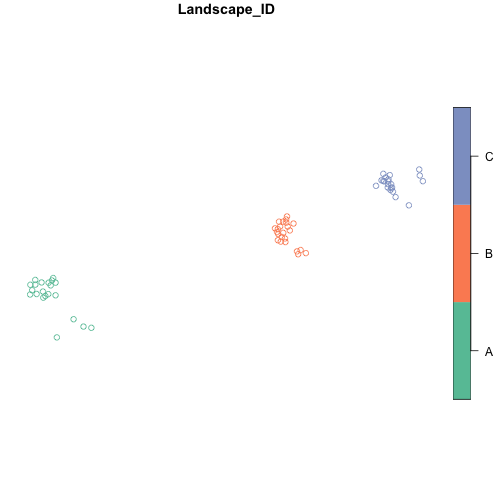
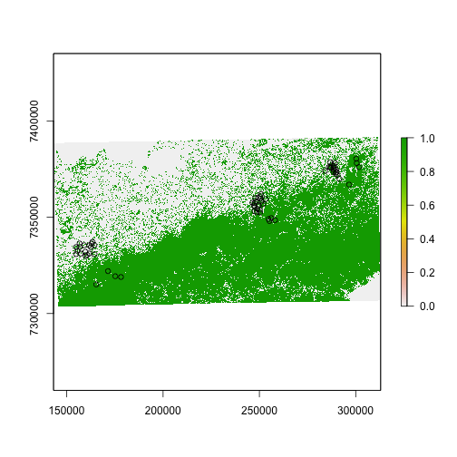
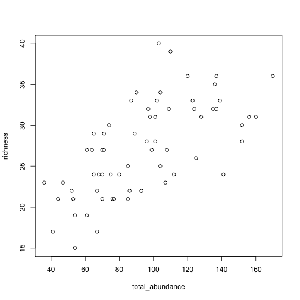
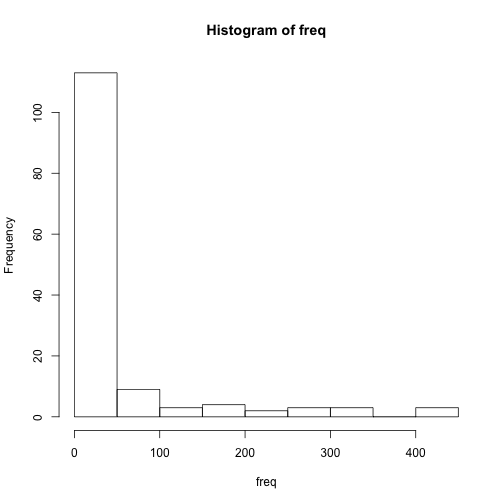
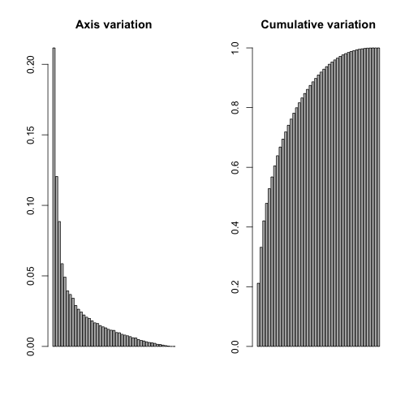
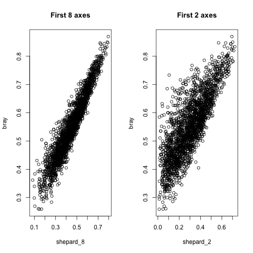
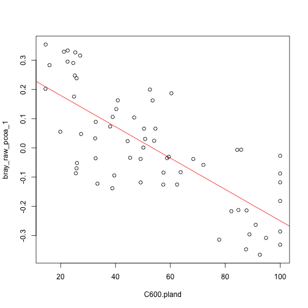

Landscape metric analysis¶
In this practical, we are going to use R to:
obtain landscape metrics from a map,
obtain community metrics from a bird dataset and
analyse the data to assess how Atlantic Forest birds are impacted by habitat loss and fragmentation.
Everyone in the class will have access to the same data but each group will be assigned a specific question that needs to be answered by Friday 20th November 2020. On Friday, one representative from each group (make sure to decide this beforehand), will present their results on slides. A discussion will follow.
Requirements¶
This practical needs the following R packages. They have all been installed on the RStudio Cloud Project for this practical, but if you are following this practical on your own laptop, you will need to install the following:
install.packages('raster')
install.packages('sf')
install.packages('landscapemetrics')
install.packages('ggplot')
install.packages('rgdal')
install.packages('vegan')
You can now load the required packages:
library(raster)
library(sf)
library(landscapemetrics)
library(vegan)
library(ggplot)
## Error in library(ggplot): there is no package called 'ggplot'
Data sets¶
The first step is to load and explore the datasets.
Species data¶
This is a bird data set that was collected in the Brazilian Atlantic Forest between 2001 and 2007. The data set contains the abundance of 140 species that were captured in 65 sites, from three different landscapes with different proportions of forest cover at the 10,000 hectare scale.
More info about the data set can be found in the following papers:
Banks-Leite, C., Ewers, R. M., & Metzger, J. P. (2012). Unraveling the drivers of community dissimilarity and species extinction in fragmented landscapes. Ecology 93(12), 2560-2569. https://esajournals.onlinelibrary.wiley.com/doi/10.1890/11-2054.1
Banks-Leite, C., Ewers, R. M., Kapos, V., Martensen, A. C., & Metzger, J. P. (2011). Comparing species and measures of landscape structure as indicators of conservation importance. Journal of Applied Ecology 48(3), 706-714. https://doi.org/10.1111/j.1365-2664.2011.01966.x
There are three files to load.
Sites data¶
First, we can load the sites data and use the longitude and latitude coordinates (WGS84, EPSG code 4326) to turn the data into an sf object.
sites <- read.csv("data/sites.csv", header = TRUE)
sites <- st_as_sf(sites, coords=c('Lon','Lat'), crs=4326)
plot(sites[c('Landscape_ID')], key.pos=4)

View(sites)
The three landscapes (A B and C) are spatially separated in areas with different overall levels of deforestation, but each has four control sites in local continuous forest. The sites data set also describes the characteristics of the sites:
Landscape: whether the site belong to a fragmented or a continuously-forested control landscape,Percent: the proportion of forest cover at the 10,000 ha landscape scale, andFrag_Cont: as we just saw, fragmented landscapes were paired with a control landscape, so this variable gives you the information of which sites were closer together.
Abundance data¶
Next, read in the data set showing the sites x species abundance matrix. As you’ll see, a lot of the species were only caught once or twice and there are lots of 0s in the matrix. Most species are globally common or rare in the dataset: few species have variable levels of abundance.
# Load the abundance data and use the first column (site names) as row names
abundance <- read.csv("data/abundance.csv", row.names=1, stringsAsFactors = FALSE)
View(abundance)
Species trait data¶
Last, the bird trait data set includes information about:
The main diet of all species, split into five categories (
Invertebrates,Vertebrates,Fruits,Nectar,Seeds).The preferred foraging strata, split into four categories (
Ground,Understory,Midstory,Canopy)The species’ mean body size (
BMass).The number of habitats the species uses (
Nhabitats), representing specialisation.
The values used for the diet and foraging strata are a semi-quantititiave measure of use frequency: always (3), frequently (2), rarely (1), never (0). This matrix thus contains semi-quantitative variables and continuous variables.
traits <- read.csv("data/bird_traits.csv", stringsAsFactors = FALSE)
View(traits)
Data checking¶
It is always wise to check data carefully before analysis, particularly to look for missing data. Some key tools:
str(abundance)
## 'data.frame': 65 obs. of 140 variables:
## $ species1 : int 0 0 0 0 0 0 0 0 0 0 ...
## $ species2 : int 0 0 0 0 0 0 0 0 1 0 ...
## $ species3 : int 0 0 0 0 0 0 0 0 0 0 ...
## $ species4 : int 0 0 0 0 1 0 0 0 0 0 ...
## $ species5 : int 0 0 0 3 0 0 0 0 0 0 ...
## $ species6 : int 0 0 1 0 0 0 0 0 0 0 ...
## $ species7 : int 2 0 0 1 0 0 0 0 0 0 ...
## $ species8 : int 0 0 4 2 0 0 0 0 3 12 ...
## $ species9 : int 0 0 0 0 0 1 0 0 0 0 ...
## $ species10 : int 10 5 8 1 1 3 1 1 9 8 ...
## $ species11 : int 2 4 4 1 0 2 6 3 6 7 ...
## $ species12 : int 0 0 0 0 0 0 0 0 0 0 ...
## $ species13 : int 0 0 0 0 0 0 0 0 0 0 ...
## $ species14 : int 0 0 0 0 0 0 0 0 0 0 ...
## $ species15 : int 0 0 0 0 0 0 0 0 0 0 ...
## $ species16 : int 0 0 0 0 0 0 0 0 0 0 ...
## $ species17 : int 0 0 0 0 1 0 0 0 0 0 ...
## $ species18 : int 0 0 0 0 0 0 0 0 0 0 ...
## $ species19 : int 11 2 13 3 1 1 7 14 2 9 ...
## $ species20 : int 0 0 0 0 0 0 0 0 0 0 ...
## $ species21 : int 0 0 0 0 0 0 0 0 0 0 ...
## $ species22 : int 0 0 0 0 5 0 0 0 0 0 ...
## $ species23 : int 0 0 0 0 0 0 0 0 0 0 ...
## $ species24 : int 0 0 1 0 0 0 0 0 0 2 ...
## $ species25 : int 0 0 0 0 0 0 0 0 0 0 ...
## $ species26 : int 7 5 9 6 0 8 5 5 13 18 ...
## $ species27 : int 0 0 0 1 0 0 0 1 0 0 ...
## $ species28 : int 0 0 0 0 0 0 0 0 0 0 ...
## $ species29 : int 0 0 0 0 0 0 0 0 0 0 ...
## $ species30 : int 0 0 0 0 0 0 0 0 0 0 ...
## $ species31 : int 0 0 0 0 0 0 0 1 0 0 ...
## $ species32 : int 2 2 0 0 1 1 0 1 0 0 ...
## $ species33 : int 0 0 0 0 0 0 0 0 0 0 ...
## $ species34 : int 0 0 0 0 0 0 0 0 0 0 ...
## $ species35 : int 0 3 0 0 0 0 0 0 0 0 ...
## $ species36 : int 0 0 0 0 0 0 0 0 0 0 ...
## $ species37 : int 0 0 0 0 0 0 0 0 0 0 ...
## $ species38 : int 5 1 9 4 1 2 3 2 2 5 ...
## $ species39 : int 0 0 0 0 0 0 0 0 0 0 ...
## $ species40 : int 0 0 0 0 0 0 0 0 0 0 ...
## $ species41 : int 0 0 0 0 0 0 0 0 0 0 ...
## $ species42 : int 0 0 0 0 0 0 0 0 0 0 ...
## $ species43 : int 0 0 0 0 0 0 0 3 0 0 ...
## $ species44 : int 1 0 0 0 0 0 0 0 0 0 ...
## $ species45 : int 0 0 1 0 2 0 0 0 0 6 ...
## $ species46 : int 1 0 0 3 0 0 0 0 0 0 ...
## $ species47 : int 0 0 0 0 0 0 0 0 0 0 ...
## $ species48 : int 0 2 2 1 0 0 0 0 0 0 ...
## $ species49 : int 0 0 0 0 0 0 0 0 0 0 ...
## $ species50 : int 0 0 0 0 0 0 2 0 0 0 ...
## $ species51 : int 0 0 0 0 0 0 0 0 0 0 ...
## $ species52 : int 0 1 0 0 0 0 0 0 0 0 ...
## $ species53 : int 0 0 0 0 0 0 0 0 0 0 ...
## $ species54 : int 0 0 0 0 0 0 0 0 0 0 ...
## $ species55 : int 1 1 0 0 0 3 0 0 0 1 ...
## $ species56 : int 0 0 0 0 0 2 0 0 0 0 ...
## $ species57 : int 1 1 2 0 0 0 1 0 0 4 ...
## $ species58 : int 8 3 4 2 0 5 5 6 0 9 ...
## $ species59 : int 0 0 1 0 0 0 0 0 0 1 ...
## $ species60 : int 0 0 0 0 0 0 0 0 0 0 ...
## $ species61 : int 1 0 2 0 0 0 0 0 2 1 ...
## $ species62 : int 0 0 0 0 0 0 0 0 0 0 ...
## $ species63 : int 0 0 0 0 0 0 0 0 0 0 ...
## $ species64 : int 0 0 0 0 0 0 0 0 0 0 ...
## $ species65 : int 0 0 0 0 0 0 0 0 1 0 ...
## $ species66 : int 0 1 0 0 0 0 0 0 0 0 ...
## $ species67 : int 2 0 0 0 0 0 0 0 1 0 ...
## $ species68 : int 0 0 0 0 0 0 0 0 0 0 ...
## $ species69 : int 2 1 1 3 1 0 1 2 2 1 ...
## $ species70 : int 0 0 0 1 0 0 0 0 0 0 ...
## $ species71 : int 0 0 0 0 0 0 0 0 0 0 ...
## $ species72 : int 0 0 0 2 2 0 0 0 0 0 ...
## $ species73 : int 0 0 0 0 0 0 0 0 0 0 ...
## $ species74 : int 0 0 0 0 0 0 0 0 0 0 ...
## $ species75 : int 0 0 0 3 0 0 0 0 0 0 ...
## $ species76 : int 0 0 0 0 0 0 0 0 0 0 ...
## $ species77 : int 0 0 0 0 1 0 0 0 0 0 ...
## $ species78 : int 0 0 0 0 0 0 1 0 0 0 ...
## $ species79 : int 0 0 0 0 0 0 0 0 0 0 ...
## $ species80 : int 0 0 0 0 0 0 0 0 0 0 ...
## $ species81 : int 0 0 0 1 0 0 0 0 0 0 ...
## $ species82 : int 0 0 0 0 0 0 0 0 0 0 ...
## $ species83 : int 0 0 0 0 3 0 0 0 0 0 ...
## $ species84 : int 6 1 1 0 4 1 0 3 0 0 ...
## $ species85 : int 0 0 0 0 0 0 0 0 0 0 ...
## $ species86 : int 0 0 0 0 0 0 0 0 0 0 ...
## $ species87 : int 0 0 0 0 0 0 0 0 0 0 ...
## $ species88 : int 0 0 0 0 0 0 0 0 0 0 ...
## $ species89 : int 1 0 0 0 0 0 0 0 0 0 ...
## $ species90 : int 0 0 0 0 0 0 0 0 0 0 ...
## $ species91 : int 0 0 0 0 0 0 0 0 1 0 ...
## $ species92 : int 0 0 0 0 0 0 0 0 0 0 ...
## $ species93 : int 0 0 0 0 0 0 0 0 0 0 ...
## $ species94 : int 2 0 1 0 0 0 0 0 1 1 ...
## $ species95 : int 0 0 0 0 2 1 0 0 0 0 ...
## $ species96 : int 0 0 0 0 0 0 0 0 0 0 ...
## $ species97 : int 13 2 4 4 5 2 6 5 3 10 ...
## $ species98 : int 8 1 0 7 1 0 2 3 0 0 ...
## $ species99 : int 0 0 0 0 0 0 0 0 0 0 ...
## [list output truncated]
summary(abundance) # NAs will be counted if found
## species1 species2 species3 species4
## Min. :0.00000 Min. :0.00000 Min. :0.00000 Min. :0.0000
## 1st Qu.:0.00000 1st Qu.:0.00000 1st Qu.:0.00000 1st Qu.:0.0000
## Median :0.00000 Median :0.00000 Median :0.00000 Median :0.0000
## Mean :0.04615 Mean :0.06154 Mean :0.07692 Mean :0.2462
## 3rd Qu.:0.00000 3rd Qu.:0.00000 3rd Qu.:0.00000 3rd Qu.:0.0000
## Max. :2.00000 Max. :1.00000 Max. :3.00000 Max. :5.0000
## species5 species6 species7 species8
## Min. :0.00000 Min. :0.00000 Min. :0.0000 Min. : 0.000
## 1st Qu.:0.00000 1st Qu.:0.00000 1st Qu.:0.0000 1st Qu.: 0.000
## Median :0.00000 Median :0.00000 Median :0.0000 Median : 1.000
## Mean :0.06154 Mean :0.09231 Mean :0.2923 Mean : 2.169
## 3rd Qu.:0.00000 3rd Qu.:0.00000 3rd Qu.:0.0000 3rd Qu.: 4.000
## Max. :3.00000 Max. :2.00000 Max. :2.0000 Max. :14.000
## species9 species10 species11 species12
## Min. :0.0000 Min. : 0.000 Min. : 0.000 Min. :0.00000
## 1st Qu.:0.0000 1st Qu.: 2.000 1st Qu.: 1.000 1st Qu.:0.00000
## Median :0.0000 Median : 4.000 Median : 4.000 Median :0.00000
## Mean :0.1692 Mean : 4.846 Mean : 4.154 Mean :0.04615
## 3rd Qu.:0.0000 3rd Qu.: 8.000 3rd Qu.: 6.000 3rd Qu.:0.00000
## Max. :3.0000 Max. :17.000 Max. :24.000 Max. :3.00000
## species13 species14 species15 species16
## Min. :0.00000 Min. :0.00000 Min. :0.00000 Min. :0.00000
## 1st Qu.:0.00000 1st Qu.:0.00000 1st Qu.:0.00000 1st Qu.:0.00000
## Median :0.00000 Median :0.00000 Median :0.00000 Median :0.00000
## Mean :0.03077 Mean :0.01538 Mean :0.04615 Mean :0.03077
## 3rd Qu.:0.00000 3rd Qu.:0.00000 3rd Qu.:0.00000 3rd Qu.:0.00000
## Max. :2.00000 Max. :1.00000 Max. :1.00000 Max. :1.00000
## species17 species18 species19 species20
## Min. :0.0000 Min. :0.00000 Min. : 0.000 Min. :0.00000
## 1st Qu.:0.0000 1st Qu.:0.00000 1st Qu.: 3.000 1st Qu.:0.00000
## Median :0.0000 Median :0.00000 Median : 6.000 Median :0.00000
## Mean :0.2308 Mean :0.03077 Mean : 6.815 Mean :0.01538
## 3rd Qu.:0.0000 3rd Qu.:0.00000 3rd Qu.: 9.000 3rd Qu.:0.00000
## Max. :4.0000 Max. :1.00000 Max. :24.000 Max. :1.00000
## species21 species22 species23 species24
## Min. :0.00000 Min. :0.0000 Min. :0.0000 Min. :0.0000
## 1st Qu.:0.00000 1st Qu.:0.0000 1st Qu.:0.0000 1st Qu.:0.0000
## Median :0.00000 Median :0.0000 Median :0.0000 Median :0.0000
## Mean :0.01538 Mean :0.1692 Mean :0.1385 Mean :0.1077
## 3rd Qu.:0.00000 3rd Qu.:0.0000 3rd Qu.:0.0000 3rd Qu.:0.0000
## Max. :1.00000 Max. :5.0000 Max. :4.0000 Max. :2.0000
## species25 species26 species27 species28
## Min. :0.00000 Min. : 0.000 Min. :0.00000 Min. :0.0000
## 1st Qu.:0.00000 1st Qu.: 4.000 1st Qu.:0.00000 1st Qu.:0.0000
## Median :0.00000 Median : 5.000 Median :0.00000 Median :0.0000
## Mean :0.03077 Mean : 6.385 Mean :0.04615 Mean :0.2923
## 3rd Qu.:0.00000 3rd Qu.: 9.000 3rd Qu.:0.00000 3rd Qu.:0.0000
## Max. :1.00000 Max. :20.000 Max. :1.00000 Max. :7.0000
## species29 species30 species31 species32
## Min. :0.00000 Min. :0.00000 Min. :0.0000 Min. :0.0000
## 1st Qu.:0.00000 1st Qu.:0.00000 1st Qu.:0.0000 1st Qu.:0.0000
## Median :0.00000 Median :0.00000 Median :0.0000 Median :0.0000
## Mean :0.01538 Mean :0.01538 Mean :0.2462 Mean :0.7538
## 3rd Qu.:0.00000 3rd Qu.:0.00000 3rd Qu.:0.0000 3rd Qu.:1.0000
## Max. :1.00000 Max. :1.00000 Max. :4.0000 Max. :4.0000
## species33 species34 species35 species36
## Min. : 0.0000 Min. :0.00000 Min. :0.00000 Min. :0.00000
## 1st Qu.: 0.0000 1st Qu.:0.00000 1st Qu.:0.00000 1st Qu.:0.00000
## Median : 0.0000 Median :0.00000 Median :0.00000 Median :0.00000
## Mean : 0.5385 Mean :0.01538 Mean :0.06154 Mean :0.04615
## 3rd Qu.: 0.0000 3rd Qu.:0.00000 3rd Qu.:0.00000 3rd Qu.:0.00000
## Max. :11.0000 Max. :1.00000 Max. :3.00000 Max. :1.00000
## species37 species38 species39 species40
## Min. :0.00000 Min. : 0.000 Min. :0.00000 Min. :0.00000
## 1st Qu.:0.00000 1st Qu.: 2.000 1st Qu.:0.00000 1st Qu.:0.00000
## Median :0.00000 Median : 3.000 Median :0.00000 Median :0.00000
## Mean :0.09231 Mean : 3.677 Mean :0.01538 Mean :0.06154
## 3rd Qu.:0.00000 3rd Qu.: 5.000 3rd Qu.:0.00000 3rd Qu.:0.00000
## Max. :3.00000 Max. :18.000 Max. :1.00000 Max. :1.00000
## species41 species42 species43 species44
## Min. :0.00000 Min. :0.0000 Min. :0.0000 Min. :0.00000
## 1st Qu.:0.00000 1st Qu.:0.0000 1st Qu.:0.0000 1st Qu.:0.00000
## Median :0.00000 Median :0.0000 Median :0.0000 Median :0.00000
## Mean :0.06154 Mean :0.1538 Mean :0.3538 Mean :0.07692
## 3rd Qu.:0.00000 3rd Qu.:0.0000 3rd Qu.:0.0000 3rd Qu.:0.00000
## Max. :3.00000 Max. :4.0000 Max. :3.0000 Max. :2.00000
## species45 species46 species47 species48
## Min. : 0.000 Min. : 0.000 Min. :0.00000 Min. :0.0000
## 1st Qu.: 0.000 1st Qu.: 0.000 1st Qu.:0.00000 1st Qu.:0.0000
## Median : 0.000 Median : 0.000 Median :0.00000 Median :0.0000
## Mean : 1.046 Mean : 1.154 Mean :0.04615 Mean :0.2615
## 3rd Qu.: 1.000 3rd Qu.: 2.000 3rd Qu.:0.00000 3rd Qu.:0.0000
## Max. :13.000 Max. :20.000 Max. :2.00000 Max. :5.0000
## species49 species50 species51 species52
## Min. :0.00000 Min. :0.0000 Min. :0.00000 Min. :0.00000
## 1st Qu.:0.00000 1st Qu.:0.0000 1st Qu.:0.00000 1st Qu.:0.00000
## Median :0.00000 Median :0.0000 Median :0.00000 Median :0.00000
## Mean :0.01538 Mean :0.3538 Mean :0.01538 Mean :0.06154
## 3rd Qu.:0.00000 3rd Qu.:0.0000 3rd Qu.:0.00000 3rd Qu.:0.00000
## Max. :1.00000 Max. :5.0000 Max. :1.00000 Max. :1.00000
## species53 species54 species55 species56
## Min. :0.00000 Min. :0.00000 Min. :0.000 Min. :0.00000
## 1st Qu.:0.00000 1st Qu.:0.00000 1st Qu.:0.000 1st Qu.:0.00000
## Median :0.00000 Median :0.00000 Median :0.000 Median :0.00000
## Mean :0.04615 Mean :0.01538 Mean :1.092 Mean :0.09231
## 3rd Qu.:0.00000 3rd Qu.:0.00000 3rd Qu.:2.000 3rd Qu.:0.00000
## Max. :1.00000 Max. :1.00000 Max. :6.000 Max. :2.00000
## species57 species58 species59 species60
## Min. :0.0000 Min. : 0.000 Min. :0.0000 Min. :0.00000
## 1st Qu.:0.0000 1st Qu.: 2.000 1st Qu.:0.0000 1st Qu.:0.00000
## Median :1.0000 Median : 4.000 Median :0.0000 Median :0.00000
## Mean :0.9077 Mean : 3.908 Mean :0.3077 Mean :0.01538
## 3rd Qu.:2.0000 3rd Qu.: 6.000 3rd Qu.:0.0000 3rd Qu.:0.00000
## Max. :4.0000 Max. :12.000 Max. :2.0000 Max. :1.00000
## species61 species62 species63 species64
## Min. :0.0000 Min. :0.0000 Min. :0.00000 Min. :0.00000
## 1st Qu.:0.0000 1st Qu.:0.0000 1st Qu.:0.00000 1st Qu.:0.00000
## Median :0.0000 Median :0.0000 Median :0.00000 Median :0.00000
## Mean :0.4769 Mean :0.3231 Mean :0.01538 Mean :0.03077
## 3rd Qu.:1.0000 3rd Qu.:0.0000 3rd Qu.:0.00000 3rd Qu.:0.00000
## Max. :3.0000 Max. :5.0000 Max. :1.00000 Max. :1.00000
## species65 species66 species67 species68
## Min. :0.00000 Min. :0.0000 Min. :0.00000 Min. :0.0
## 1st Qu.:0.00000 1st Qu.:0.0000 1st Qu.:0.00000 1st Qu.:0.0
## Median :0.00000 Median :0.0000 Median :0.00000 Median :0.0
## Mean :0.01538 Mean :0.1692 Mean :0.09231 Mean :0.2
## 3rd Qu.:0.00000 3rd Qu.:0.0000 3rd Qu.:0.00000 3rd Qu.:0.0
## Max. :1.00000 Max. :3.0000 Max. :2.00000 Max. :3.0
## species69 species70 species71 species72
## Min. :0.000 Min. :0.0000 Min. :0.0 Min. : 0.0000
## 1st Qu.:0.000 1st Qu.:0.0000 1st Qu.:0.0 1st Qu.: 0.0000
## Median :1.000 Median :0.0000 Median :0.0 Median : 0.0000
## Mean :1.538 Mean :0.1538 Mean :0.2 Mean : 0.8154
## 3rd Qu.:2.000 3rd Qu.:0.0000 3rd Qu.:0.0 3rd Qu.: 0.0000
## Max. :7.000 Max. :2.0000 Max. :4.0 Max. :12.0000
## species73 species74 species75 species76
## Min. :0.00000 Min. :0.0 Min. :0.0000 Min. :0.00000
## 1st Qu.:0.00000 1st Qu.:0.0 1st Qu.:0.0000 1st Qu.:0.00000
## Median :0.00000 Median :0.0 Median :0.0000 Median :0.00000
## Mean :0.03077 Mean :0.2 Mean :0.4923 Mean :0.01538
## 3rd Qu.:0.00000 3rd Qu.:0.0 3rd Qu.:1.0000 3rd Qu.:0.00000
## Max. :1.00000 Max. :6.0 Max. :4.0000 Max. :1.00000
## species77 species78 species79 species80
## Min. :0.00000 Min. :0.0000 Min. :0.00000 Min. :0.00000
## 1st Qu.:0.00000 1st Qu.:0.0000 1st Qu.:0.00000 1st Qu.:0.00000
## Median :0.00000 Median :0.0000 Median :0.00000 Median :0.00000
## Mean :0.03077 Mean :0.1077 Mean :0.01538 Mean :0.04615
## 3rd Qu.:0.00000 3rd Qu.:0.0000 3rd Qu.:0.00000 3rd Qu.:0.00000
## Max. :1.00000 Max. :2.0000 Max. :1.00000 Max. :3.00000
## species81 species82 species83 species84
## Min. :0.00000 Min. :0.00000 Min. :0.0000 Min. : 0.000
## 1st Qu.:0.00000 1st Qu.:0.00000 1st Qu.:0.0000 1st Qu.: 0.000
## Median :0.00000 Median :0.00000 Median :0.0000 Median : 2.000
## Mean :0.03077 Mean :0.01538 Mean :0.5846 Mean : 2.538
## 3rd Qu.:0.00000 3rd Qu.:0.00000 3rd Qu.:0.0000 3rd Qu.: 4.000
## Max. :1.00000 Max. :1.00000 Max. :9.0000 Max. :11.000
## species85 species86 species87 species88
## Min. :0.00000 Min. :0.0000 Min. :0.00000 Min. :0.00000
## 1st Qu.:0.00000 1st Qu.:0.0000 1st Qu.:0.00000 1st Qu.:0.00000
## Median :0.00000 Median :0.0000 Median :0.00000 Median :0.00000
## Mean :0.04615 Mean :0.1077 Mean :0.04615 Mean :0.06154
## 3rd Qu.:0.00000 3rd Qu.:0.0000 3rd Qu.:0.00000 3rd Qu.:0.00000
## Max. :3.00000 Max. :2.0000 Max. :2.00000 Max. :3.00000
## species89 species90 species91 species92
## Min. :0.0000 Min. :0.00000 Min. :0.00000 Min. :0.00000
## 1st Qu.:0.0000 1st Qu.:0.00000 1st Qu.:0.00000 1st Qu.:0.00000
## Median :0.0000 Median :0.00000 Median :0.00000 Median :0.00000
## Mean :0.1231 Mean :0.04615 Mean :0.06154 Mean :0.09231
## 3rd Qu.:0.0000 3rd Qu.:0.00000 3rd Qu.:0.00000 3rd Qu.:0.00000
## Max. :2.0000 Max. :1.00000 Max. :1.00000 Max. :2.00000
## species93 species94 species95 species96
## Min. :0.00000 Min. :0.0000 Min. :0.0000 Min. :0.00000
## 1st Qu.:0.00000 1st Qu.:0.0000 1st Qu.:0.0000 1st Qu.:0.00000
## Median :0.00000 Median :0.0000 Median :0.0000 Median :0.00000
## Mean :0.04615 Mean :0.3231 Mean :0.4769 Mean :0.04615
## 3rd Qu.:0.00000 3rd Qu.:1.0000 3rd Qu.:0.0000 3rd Qu.:0.00000
## Max. :1.00000 Max. :2.0000 Max. :5.0000 Max. :2.00000
## species97 species98 species99 species100
## Min. : 0.000 Min. : 0.000 Min. :0.00000 Min. :0.00000
## 1st Qu.: 3.000 1st Qu.: 0.000 1st Qu.:0.00000 1st Qu.:0.00000
## Median : 5.000 Median : 2.000 Median :0.00000 Median :0.00000
## Mean : 4.831 Mean : 3.215 Mean :0.09231 Mean :0.01538
## 3rd Qu.: 6.000 3rd Qu.: 5.000 3rd Qu.:0.00000 3rd Qu.:0.00000
## Max. :13.000 Max. :13.000 Max. :3.00000 Max. :1.00000
## species101 species102 species103 species104
## Min. :0.00000 Min. :0.00000 Min. :0.0000 Min. :0.00000
## 1st Qu.:0.00000 1st Qu.:0.00000 1st Qu.:0.0000 1st Qu.:0.00000
## Median :0.00000 Median :0.00000 Median :0.0000 Median :0.00000
## Mean :0.01538 Mean :0.01538 Mean :0.1385 Mean :0.04615
## 3rd Qu.:0.00000 3rd Qu.:0.00000 3rd Qu.:0.0000 3rd Qu.:0.00000
## Max. :1.00000 Max. :1.00000 Max. :4.0000 Max. :2.00000
## species105 species106 species107 species108
## Min. :0.0000 Min. :0.000 Min. :0.00000 Min. :0.000
## 1st Qu.:0.0000 1st Qu.:0.000 1st Qu.:0.00000 1st Qu.:0.000
## Median :0.0000 Median :1.000 Median :0.00000 Median :1.000
## Mean :0.6615 Mean :1.538 Mean :0.01538 Mean :1.908
## 3rd Qu.:1.0000 3rd Qu.:3.000 3rd Qu.:0.00000 3rd Qu.:3.000
## Max. :4.0000 Max. :8.000 Max. :1.00000 Max. :8.000
## species109 species110 species111 species112
## Min. :0.00000 Min. : 0.000 Min. :0.00000 Min. :0.00000
## 1st Qu.:0.00000 1st Qu.: 0.000 1st Qu.:0.00000 1st Qu.:0.00000
## Median :0.00000 Median : 2.000 Median :0.00000 Median :0.00000
## Mean :0.01538 Mean : 2.338 Mean :0.03077 Mean :0.01538
## 3rd Qu.:0.00000 3rd Qu.: 4.000 3rd Qu.:0.00000 3rd Qu.:0.00000
## Max. :1.00000 Max. :10.000 Max. :1.00000 Max. :1.00000
## species113 species114 species115 species116
## Min. :0.00000 Min. : 0.000 Min. :0.000 Min. :0.00000
## 1st Qu.:0.00000 1st Qu.: 0.000 1st Qu.:0.000 1st Qu.:0.00000
## Median :0.00000 Median : 1.000 Median :1.000 Median :0.00000
## Mean :0.01538 Mean : 1.677 Mean :1.385 Mean :0.04615
## 3rd Qu.:0.00000 3rd Qu.: 2.000 3rd Qu.:2.000 3rd Qu.:0.00000
## Max. :1.00000 Max. :11.000 Max. :6.000 Max. :1.00000
## species117 species118 species119 species120
## Min. :0.00000 Min. : 0.000 Min. :0.0000 Min. :0.00000
## 1st Qu.:0.00000 1st Qu.: 0.000 1st Qu.:0.0000 1st Qu.:0.00000
## Median :0.00000 Median : 2.000 Median :0.0000 Median :0.00000
## Mean :0.01538 Mean : 2.738 Mean :0.1231 Mean :0.03077
## 3rd Qu.:0.00000 3rd Qu.: 4.000 3rd Qu.:0.0000 3rd Qu.:0.00000
## Max. :1.00000 Max. :16.000 Max. :7.0000 Max. :1.00000
## species121 species122 species123 species124
## Min. : 0.000 Min. :0.00000 Min. : 0.000 Min. :0.00000
## 1st Qu.: 0.000 1st Qu.:0.00000 1st Qu.: 1.000 1st Qu.:0.00000
## Median : 0.000 Median :0.00000 Median : 2.000 Median :0.00000
## Mean : 1.215 Mean :0.01538 Mean : 2.985 Mean :0.03077
## 3rd Qu.: 2.000 3rd Qu.:0.00000 3rd Qu.: 4.000 3rd Qu.:0.00000
## Max. :10.000 Max. :1.00000 Max. :14.000 Max. :1.00000
## species125 species126 species127 species128
## Min. :0.00000 Min. :0.00000 Min. :0.00000 Min. :0.0000
## 1st Qu.:0.00000 1st Qu.:0.00000 1st Qu.:0.00000 1st Qu.:0.0000
## Median :0.00000 Median :0.00000 Median :0.00000 Median :0.0000
## Mean :0.01538 Mean :0.01538 Mean :0.03077 Mean :0.3846
## 3rd Qu.:0.00000 3rd Qu.:0.00000 3rd Qu.:0.00000 3rd Qu.:0.0000
## Max. :1.00000 Max. :1.00000 Max. :2.00000 Max. :2.0000
## species129 species130 species131 species132
## Min. : 0.000 Min. :0.00000 Min. :0.00000 Min. : 0.000
## 1st Qu.: 3.000 1st Qu.:0.00000 1st Qu.:0.00000 1st Qu.: 2.000
## Median : 6.000 Median :0.00000 Median :0.00000 Median : 4.000
## Mean : 6.431 Mean :0.01538 Mean :0.06154 Mean : 4.692
## 3rd Qu.: 9.000 3rd Qu.:0.00000 3rd Qu.:0.00000 3rd Qu.: 6.000
## Max. :16.000 Max. :1.00000 Max. :1.00000 Max. :20.000
## species133 species134 species135 species136
## Min. :0.0000 Min. :0.00000 Min. : 0.000 Min. :0.0000
## 1st Qu.:0.0000 1st Qu.:0.00000 1st Qu.: 1.000 1st Qu.:0.0000
## Median :0.0000 Median :0.00000 Median : 4.000 Median :0.0000
## Mean :0.2154 Mean :0.06154 Mean : 4.431 Mean :0.2615
## 3rd Qu.:0.0000 3rd Qu.:0.00000 3rd Qu.: 7.000 3rd Qu.:0.0000
## Max. :3.0000 Max. :1.00000 Max. :20.000 Max. :2.0000
## species137 species138 species139 species140
## Min. :0.00000 Min. :0.00000 Min. :0.0000 Min. :0.0000
## 1st Qu.:0.00000 1st Qu.:0.00000 1st Qu.:0.0000 1st Qu.:0.0000
## Median :0.00000 Median :0.00000 Median :0.0000 Median :0.0000
## Mean :0.03077 Mean :0.03077 Mean :0.4615 Mean :0.1538
## 3rd Qu.:0.00000 3rd Qu.:0.00000 3rd Qu.:1.0000 3rd Qu.:0.0000
## Max. :1.00000 Max. :1.00000 Max. :3.0000 Max. :3.0000
View(abundance)
any(is.na(abundance))
## [1] FALSE
Landcover data¶
We will take data to calculate the landscape metrics from a landcover map for the study region. If you want to know more about the origin of the map, check https://mapbiomas.org. It is in Portugese but Google should translate it for you! This is a database of land cover through time for the entire country of Brazil - we are using data contemporary with the bird sampling.
The map is a GEOTIFF file of landcover classes, therefore we are going to use the function raster from the raster package to load the map. First, load the map and check its coordinate system:
# load map
landcover <- raster("data/map.tif")
print(landcover)
## class : RasterLayer
## dimensions : 7421, 11132, 82610572 (nrow, ncol, ncell)
## resolution : 0.0002694946, 0.0002694946 (x, y)
## extent : -49.00004, -46.00003, -24.99993, -23.00002 (xmin, xmax, ymin, ymax)
## crs : +proj=longlat +datum=WGS84 +no_defs +ellps=WGS84 +towgs84=0,0,0
## source : /Users/dorme/Teaching/GIS/Masters_GIS_2020/practicals/practical_4/data/map.tif
## names : map
## values : 0, 33 (min, max)
The map has 33 values for the 33 different landcover classes including: forest, plantation, mangroves, etc. We will only be looking at forests (landcover class 3).
Another important thing is that the map is quite large and has a very fine resolution (0.000269° is about 1 arcsecond or ~30 metres). There are over 82 million pixels in the image and so the data is slow to handle. In fact, although the file loaded quickly, it did not load the actual data. The raster package often does this to keep the memory load low - it only loads data when requested and has tricks for only loading the data it needs. You can see this:
inMemory(landcover)
## [1] FALSE
We’re not even going to try and plot this map! This is something that would be much easier to view in QGIS, which handles visualising big data well. We will extract some data from it in the next section.
Calculating landscape metrics¶
Landscape data processing¶
Before we calculate landscape metrics, we first need to process the land cover data to make it easier to work with. In particular, using the whole landscape map is very computationally demanding so we need to reduce the data down to the scale of the focal landscapes in order to extract landscape metrics for each site. In order to do that we need to:
Identify a smaller region of interest for the sites
Crop the landcover raster down to this region, to use a small dataset.
Convert the landcover to a binary forest - matrix map.
Reproject the data into a suitable projected coordinate system.
# Get the bounding box and convert to a polygon
sites_region <- st_as_sfc(st_bbox(sites))
# Buffer the region by 0.1 degrees to get coverage around the
# - this throws out a warning, but this is only a rough border.
sites_region <- st_buffer(sites_region, 0.1)
# Convert to a `sp` extent object for use in `crop`
sites_extent <- extent(matrix(st_bbox(sites_region), ncol=2))
# Crop the landcover data and convert to a binary forest map
sites_landcover <- crop(landcover, sites_extent)
sites_forest <- sites_landcover == 3
print(sites_forest)
## class : RasterLayer
## dimensions : 2843, 6120, 17399160 (nrow, ncol, ncell)
## resolution : 0.0002694946, 0.0002694946 (x, y)
## extent : -48.49447, -46.84517, -24.34156, -23.57539 (xmin, xmax, ymin, ymax)
## crs : +proj=longlat +datum=WGS84 +no_defs +ellps=WGS84 +towgs84=0,0,0
## source : /private/var/folders/62/cz0ctby96lq7ggnytfbtd__40000gn/T/RtmpEa4iSS/raster/r_tmp_2020-11-13_165624_65379_61378.grd
## names : layer
## values : 0, 1 (min, max)
If you check that final output, you will see that the values changed to values: 0, 1 (min, max).
Now that we have the regional forest for the sites, we can reproject the data. We will use UTM Zone 23S (EPSG: 32723) for all of the landscapes. Remember that the landcover class data is categorical - we have to use method='ngb' when projecting the data.
sites_utm23S <- st_transform(sites, 32723)
# This takes a little while to run!
sites_forest_utm23S <- projectRaster(sites_forest, crs="+init=epsg:32723", method='ngb')
Just to check, we should now be able to plot the sites and forest.
plot(sites_forest_utm23S)
plot(st_geometry(sites_utm23S), add=TRUE)

Extracting landscape metrics¶
You can now explore the functions in the package landscapemetrics to measure different landscape metrics. You can also look at the complete set of 132 landscape metrics that the package will calculate:
lsm_abbreviation_names
## Error in eval(expr, envir, enclos): object 'lsm_abbreviation_names' not found
Landscape levels¶
There are three core levels of calculation and it is important to understand how these are applied within a local landscape:
The patch level metrics are things that are calculated for every single patch in the local landscape. So in the output, there is one row for each patch and it is identified with a patch
idand aclassid.The class level metrics are aggregated across all patches of a specific class, so there is a row for each class that appears in the local landscape, labelled with a
classid (but no patch).The landscape metrics aggregate all patches, so there is just one row per landscape.
To show how these values are reported - and how we can use them - the following code uses the sample_lsm function to calculate a set of metrics for patch counts and areas at all three levels, along with the proportion landcover of each class. The local landscape is defined as a circle with a radius of 600 meters. We will use the Alce site as an example:
# Calculate patch areas at patch, class and landscape scale.
lsm <- sample_lsm(sites_forest_utm23S, sites_utm23S,
shape = "circle", size = 600,
plot_id = sites_utm23S$Site,
what = c('lsm_p_area',
'lsm_c_np', 'lsm_l_np',
'lsm_c_area_mn', 'lsm_l_area_mn',
'lsm_c_pland'))
# Use Alce as an example
alce <- subset(lsm, plot_id=='Alce')
print(alce)
## # A tibble: 21 x 8
## layer level class id metric value plot_id percentage_inside
## <int> <chr> <int> <int> <chr> <dbl> <fct> <dbl>
## 1 1 class 0 NA area_mn 25.5 Alce 101.
## 2 1 class 1 NA area_mn 3.70 Alce 101.
## 3 1 class 0 NA np 3 Alce 101.
## 4 1 class 1 NA np 10 Alce 101.
## 5 1 class 0 NA pland 67.4 Alce 101.
## 6 1 class 1 NA pland 32.6 Alce 101.
## 7 1 landscape NA NA area_mn 8.74 Alce 101.
## 8 1 landscape NA NA np 13 Alce 101.
## 9 1 patch 0 1 area 75.5 Alce 101.
## 10 1 patch 0 2 area 0.246 Alce 101.
## # … with 11 more rows
# Calculate total area
sum(alce$value[alce$metric == 'area'])
## [1] 113.6314
From that table, you can see that there are 13 patches in the Alce local landscape that sum to 113.63 hectares. That is not quite the precise area of the circular landscape (\(\pi \times 600^2 = 1130973 m^2 \approx 113.1 ha\)) because the landscape is used to select a set of whole pixels. The class metrics summarise the areas of the patches by class (10 forest patches, 3 matrix patches) and the landscape metrics aggregate everything. We can use the table to calculate the lsm_l_area_mn value by hand:
# Weighted average of class patch sizes (with some rounding error)
25.5 * 3 + 3.7 * 10) / 13
## Error: <text>:2:20: unexpected ')'
## 1: # Weighted average of class patch sizes (with some rounding error)
## 2: 25.5 * 3 + 3.7 * 10)
## ^
Merging landscape metrics onto sites¶
The contents of lsm is rather unhelpful in two ways:
The variables are not in separate columns, but stacked in the
valueandmetricfields.Class variables include rows for both the matrix and forest, and we are primarily interested in the forest class metrics.
So, we need a couple of tools to help convert this output into something easier to use:
We can use
subsetto keep just the columns and rows we actually want: forest class metrics and values.We need to
reshapethe data frame to have a column for each measure. (The help and syntax of thereshapefunction is notoriously unhelpful - there are other, better tools but this simple recipe works here).Along the way, we should make sure that our variable names are clear - we want the method of calculation of each value to be obvious.
# Drop the patch data and landscape rows
lsm_forest <- subset(lsm, level == 'class')
# Drop down to the forest class and also reduce to the three core fields
lsm_forest <- subset(lsm_forest, class == 1, select=c(metric, value, plot_id))
# Rename the value field so that - when combined with the metric
# name - the local landscape details are recorded
names(lsm_forest)[2] <- 'C600'
# Reshape that dataset so that each metric has its own column
lsm_forest <- reshape(data.frame(lsm_forest), direction='wide',
timevar='metric', idvar='plot_id')
head(lsm_forest)
## plot_id C600.area_mn C600.np C600.pland
## 1 Alce 3.703055 10 32.58832
## 4 Alcides 5.509523 8 38.98551
## 7 Alteres 28.182544 1 24.89146
## 10 Antenor 95.853420 1 84.78261
## 13 Areial 113.303658 1 100.00000
## 16 Baleia 8.075563 7 50.14535
Now it is easy to match those landscape metrics to the sites data.
sites <- merge(sites, lsm_forest, by.x='Site', by.y='plot_id')
Group exercise¶
This exercise will consist of obtaining a number of landscape metrics for each of our 65 sites, so we can later use them as explanatory variables in a model to understand how birds are affected by habitat loss and fragmentation.
Each group will focus on a set of metrics that capture different aspects of landscape structure. Look up and read the information for your metrics, so you can have a better understanding of what they mean, and collate them all to the sites.csv spreadsheet (or you can create another spreadsheet).
In all cases, we are interested in the forest specific values of the class metrics, so you will need to subset and reshape the data as above. There is a help page for each metric: for example, ?lsm_c_area_cv.
Groups SP01, SP02, SP03: Patch size & number of patches
Coefficient of variation of patch area (
lsm_c_area_cv)Mean of patch area (
lsm_c_area_mn)Number of patches (
lsm_c_np)
Groups SP04, SP05, SP06: Connectivity
Patch density (
lsm_c_pd)Coefficient of variation of euclidean nearest-neighbor distance (
lsm_c_enn_cv)Aggregation index (
lsm_c_ai)
Groups SP07, SP08, SP09: Edge effects
Coefficient of variation perimeter-area ratio (
lsm_c_para_cv)Coefficient of variation of related circumscribing circle (
lsm_c_circle_cv)Edge density (
lsm_c_ed)
Groups SP13, SP14: Forest cover
There is only one way to measure habitat cover:
lsm_c_pland. These groups will also focus on exploring the scale of effect: the spatial scale at which responses are strongest. You’ll need to calculate forest cover using radii of 300, 500, 800, 1100 and 1400 m. Note thatlsm_c_plandis a proportion of the area, so does not need to be adjusted for the changing landscape area.
Calculating biodiversity metrics¶
The over-riding research question we are looking at is:
Is the structure of the bird community influenced by the spatial characteristics of the sites?
However there are lots of different ways of measuring community structure. We will look at measures of overall diversity, community composition and functional diversity.
Measuring site abundance, species richness, species diversity and evenness¶
Abundance can be measured at the species level, but here we are interested in total community abundance, so the total number of individuals capture at each site. We can only measure bird abundance because this study used mist nets, where each individual was uniquely tagged.
To measure species richness you can use the function specnumber from the vegan package. As we saw in the lecture, Measuring Biodiversity, sometimes you may need to control for sampling effort or number of individuals to compare species richness across sites. You can use rarefaction (with function rarefy) to estimate how many species would you have seen if you had lower sampling effort or fewer individuals. If you’re interested in understanding how species diversity as measured by the Shannon index (H) you can then use function diversity. The vegan package doesn’t have any functions for measuring evenness, but Pielou’s Evenness (\(J\)) is easily measured with the formula below:
# First, we sort the rows of abundance to make sure that they are in the
# same order as the sites data frame.
site_order <- match(rownames(abundance), sites$Site)
abundance <- abundance[site_order, ]
# Now we can store diversity metrics values in the sites data frame
sites$total_abundance <- rowSums(abundance)
sites$richness <- specnumber(abundance)
sites$Srar <- rarefy(abundance, min(sites$total_abundance))
sites$H <- diversity(abundance, index='shannon')
sites$J <- H / log(sites$richness)
## Error in eval(expr, envir, enclos): object 'H' not found
Exercise¶
What is the correlation between richness, diversity, evenness and abundance across sites? You can use the function cor() and plot() the results to better understand the results. Which biodiversity metrics would you choose to report your results and why?
# Example code:
cor(sites$richness, sites$total_abundance)
## [1] 0.6451641
plot(richness ~ total_abundance, data=sites)

Hint: There is no right or wrong answer here. You can choose any metric as long as you understand its drawbacks.
Species rank abundance¶
We could also look quickly at the rank abundance of species. What is the prevalence of rare species? Rare species are those that were caught a few times only. This is very arbitrary and likely to be biased by how easily species are disturbed and trapped.
# Get the total abundance of each _species_
freq <- colSums(abundance)
table(freq)
## freq
## 1 2 3 4 5 6 7 8 9 10 11 13 14 15 16 17 19 20 21 23
## 28 14 15 10 2 6 3 2 2 3 3 3 1 1 2 2 2 1 2 2
## 25 30 31 32 35 38 43 49 53 59 68 71 75 79 90 100 109 124 141 152
## 1 1 2 1 1 1 1 1 1 1 1 1 1 1 1 2 1 1 1 1
## 165 178 194 209 239 254 270 288 305 314 315 415 418 443
## 1 1 1 1 1 1 1 1 1 1 1 1 1 1
hist(freq)

Measuring community composition¶
Community composition is a class of biodiversity measure that incorporates information on species richness, abundance and species identity. That inclusivity makes them very informative biodiversity metric but they are also complex to compute and interpret.
There are three stages to assessing community composition:
The raw data for community composition is a site by species matrix showing the abundance (or presence) of each species in the overall species pool at each site. It is common to transform the site by species data in one or more ways to adjust the emphasis given to the different species before assessing composition.
The site by species matrix is then transformed to a dissimilarity matrix - a site by site matrix that quantifies the differences between the communities at each pair of sites.
The dissimilarity matrix represents a complex pattern of community differences and an ordination can then be used to identify independent axes of community variation across sites.
All of these steps have multiple options!
Transforming site by species data.¶
There are several common approaches used for transforming site by species matrices before calculating dissimilarities. All of these approaches alter the weighting given to the prevalence or abundance of the different species.
Reducing abundance data to a binary presence-absence data. This obviously emphasizes differences in species identity between sites, often giving measures of \(\beta\) diversity, and is also often used when sampling is not thought to give reliable abundance data. The
vegdistfunction (see below) has the option (binary=TRUE) to do this automatically.Scaling abundance data. At the moment, a lot of the variation in the abundance data is driven by the common species. There were 443 individuals of Species 19 caught: dissimilarity will be heavily affected by the local abundance of this species. If scaling is applied to a dataset, then the balance of the analysis is altered to equally weight each species when calculating dissimilarity which can provide more biologically meaningful results.
Although this seems counterintuitive, the detectability and distribution of rare species can confound community patterns among the common species. Removing rare species can therefore help make major compositional shifts more obvious.
We will revisit this but for the moment we will stick with the raw abundance data.
Calculating dissimilarity Indices¶
Dissimilarity indices are used to compare two sites using the total number (or abundances) of species in each site (A + B), along with the number (or abundances) of species shared between the site (J). These can be calculated using the vegdist function in vegan. A huge number have been proposed and can be calculated in vegan: look at the help for both ?vegdist and ?designdist for the details!
We have very many options but we have to start somewhere: we will use the Bray-Curtis dissimilarity index computed from raw abundances.
bray <- vegdist(abundance, method="bray", binary=FALSE)
Have a look at the association matrix (print(bray)), and notice it is triangular. Why do you think that is? We can visualise this data to help understand what is going on. We’re actually going to cheat a bit here - we have a big matrix and the raster package is really good at plotting those quickly…
bray_r <- raster(as.matrix(bray))
plot(bray_r, col=hcl.colors(20))
The first thing that jumps out is the diagonal - this is just that comparing a site to itself gives zero dissimilarity. All of the other pairwise combinations show a range of values.
If we want to compute the dissimilarity matrix based on another index, we can simply change method="bray" to any of the other indices provided in vegdist. Each dissimilarity metric has advantages and disadvantages but Bray-Curtis and Jaccard are commonly used for species abundance data.
Note that some of these indices in vegdist are not appropriate for abundance data. For example, Euclidean distance is widely used for environmental data (landscape metrics, geographic distance, temperature, altitude, etc) but is not ecologically meaningful for biodiversity data!
Principal coordinate analysis¶
We can now perform a principal coordinate analysis (PCoA) using the bray matrix as input. This is sometimes called classical multidimensional scaling, hence the function name: cmdscale. The PCoA will take your dissimilarity matrix and represent the structure in this dataset in a set of independent vectors (or ordination axes). You can then use ordination axes to represent how similar (or dissimilar) two sites are with respect to the species they have.
pcoa <- cmdscale(bray, k=8, eig=TRUE)
A PCoA calculates multiple independent axes of variation in the community dissimilarity. In fact, it calculates as many axes are there are sites. However, these different axes differ in how much variation they describe - we rarely want to consider more than a few. Here, we have only kept the data for the first eight (k=8). We are also hanging on the eigenvalues (eig=TRUE), which are measures of the amount variation associated with each axis.
Community separation in space¶
We will now explore community composition graphically, which is most convenient in two dimensions. We have to extract the new coordinates of the data before being able to plot them. Once again, it is wise to give clear names to each variable, otherwise we end up with variable names like X1.
# Extract the scores
pcoa_axes <- pcoa$points
colnames(pcoa_axes) <- paste0('bray_raw_pcoa_', 1:8)
We can look at the correlations between all of those axes. We are using zapsmall to hide all correlations smaller than \(10^{-10}\) - as expected, none of these axes are correlated.
zapsmall(cor(pcoa_axes), digits=10)
## bray_raw_pcoa_1 bray_raw_pcoa_2 bray_raw_pcoa_3 bray_raw_pcoa_4
## bray_raw_pcoa_1 1 0 0 0
## bray_raw_pcoa_2 0 1 0 0
## bray_raw_pcoa_3 0 0 1 0
## bray_raw_pcoa_4 0 0 0 1
## bray_raw_pcoa_5 0 0 0 0
## bray_raw_pcoa_6 0 0 0 0
## bray_raw_pcoa_7 0 0 0 0
## bray_raw_pcoa_8 0 0 0 0
## bray_raw_pcoa_5 bray_raw_pcoa_6 bray_raw_pcoa_7 bray_raw_pcoa_8
## bray_raw_pcoa_1 0 0 0 0
## bray_raw_pcoa_2 0 0 0 0
## bray_raw_pcoa_3 0 0 0 0
## bray_raw_pcoa_4 0 0 0 0
## bray_raw_pcoa_5 1 0 0 0
## bray_raw_pcoa_6 0 1 0 0
## bray_raw_pcoa_7 0 0 1 0
## bray_raw_pcoa_8 0 0 0 1
Now we can merge them onto the site data to make sure that the landscape and community metrics are matched by site.
# Convert the pcoa axis values to a data frame and label by site
pcoa_axes_df <- data.frame(pcoa_axes)
pcoa_axes_df$Site <- rownames(pcoa_axes)
# Merge onto the sites data - the PCoA axes get the labels X1 to X8
sites_pcoa <- merge(sites, pcoa_axes_df, by='Site')
Now we can look to see how the community metrics reflect the landscape structure.
ggplot(sites_pcoa, aes(bray_raw_pcoa_1, bray_raw_pcoa_2)) +
geom_point(aes(colour = C600.pland)) +
scale_colour_gradientn(colors=hcl.colors(20)) +
theme_classic()
## Error in ggplot(sites_pcoa, aes(bray_raw_pcoa_1, bray_raw_pcoa_2)): could not find function "ggplot"
Which patterns can you see from that plot? Along which axis do you see the trends varying the most, PCoA1 or PCoA2? Try looking at some of the other PCoA axes.
Exercise¶
Now plot PCoA axis 1 against the percentage of forest cover. Which trends do you get? And what about axis 2?
How many axes to consider¶
The eigenvalues show the variance - hence the information content - associated with each principal coordinate axis. Note that the eigenvalues are in descending order, so that the axes are numbered in order of their importance. Also note that some of the eigenvalues are negative - these axes cannot be interpreted biologically, but luckily this is never a problem for the first few axes which are the most meaningful anyway.
To make it easier to decide on how many dimensions we will keep, we look at the proportion of the total variance in the data set that is explained by each of the principal coordinates. The cumulative sum of eigenvalues describes how much of the variation is explained by the first n principal coordinates. We will drop the negative eigenvalues - they just confuse the cumulative calculation!
par(mfrow=c(1,2))
eig <- pcoa$eig[pcoa$eig >0]
barplot(eig / sum(eig), main='Axis variation')
barplot(cumsum(eig)/ sum(eig), main='Cumulative variation')

For this particular PCoA, the bar plot doesn’t really give a good indication about the number of principal coordinates to retain: the bars gradually decrease in size rather than showing a clear cutoff. From those plots, we can see that the first principal coordinate contains almost twice as much information as the second one (23% versus 13 %). However, together they still only explain 36% of the variation - it is common to consider axes up to a cumulative proportion of 80%.
Sidebar: Shepard diagrams¶
Shepard diagram’s compares the distances between sites using our PCoA axes to the original distances calculated using all the community data. If the PCoA captures the data well, these two distances will be strongly correlated and so these are a useful tool to see if a community anal
We will use Euclidean distances between sites in the PCoA ordination space. This will provide us with a matrix of distances between objects that can be directly compared to the original distance between objects computed from a Bray-Curtis dissimilarity index. We can compare the Shepard diagram when using all 8 of the axes we kept, to simply using the first two axes:
# Use first 8 axes
shepard_8 <- vegdist(pcoa_axes, method="euc", binary=FALSE)
# Use just the first 2
shepard_2 <- vegdist(pcoa_axes[, c(1,2)], method="euc", binary=FALSE)
Now let’s plot this against the Bray-Curtis distances.
par(mfrow=c(1,2))
plot(shepard_8, bray, main='First 8 axes')
plot(shepard_2, bray, main='First 2 axes')

The correlation is clearly stronger with all eight axes but both look pretty good. But can we improve it? And can we make do with just one axis?
Exercise 1 - community metric variations.¶
All of the information from that PCoA depends entirely on our choices for the original dissimilarity matrix. If we change that metric then the positions of sites in the ordination space will change and so will the relative importances of the PCoA axes.
So, now explore varying the steps in this analysis. Change your inputs, change the dissimilarity metric and recalculate your ordination.
Use the command
scaled_abundance <- scale(abundance)and use this as an input tovegdist. This will automatically scale the matrix by columns, so each column will have a mean of near 0, and standard deviation of 1.Use presence-absence data by using the argument
binary =TRUEwithvegdist.Try excluding the rare species (e.g. all species with 5 or less individuals):
# choose columns (species) from abundance where total abundance is greater than 5 total_abundance <- colSums(abundance) common <- abundance[,which(abund >5)]
## Error in which(abund > 5): object 'abund' not found# data only has 71 columns now str(common)
## Error in str(common): object 'common' not foundTry using at least another dissimilarity metric.
Do any of these options seem to give a clearer relationship between the community composition and forest cover? There is no right or wrong answer here - different choices reflect different hypotheses.
Exercise 2 - regression of landscape and community metrics¶
In addition to looking at correlations, we can fit linear models to predict how community composition varies between fragmented landscapes and continuous landscapes?
# Model community composition as a function of forest cover
mod_fc <- lm(bray_raw_pcoa_1 ~ C600.pland, data=sites_pcoa)
summary(mod_fc)
##
## Call:
## lm(formula = bray_raw_pcoa_1 ~ C600.pland, data = sites_pcoa)
##
## Residuals:
## Min 1Q Median 3Q Max
## -0.23636 -0.08187 -0.00709 0.09484 0.22351
##
## Coefficients:
## Estimate Std. Error t value Pr(>|t|)
## (Intercept) 0.2865165 0.0348962 8.211 1.53e-11 ***
## C600.pland -0.0053584 0.0005845 -9.168 3.32e-13 ***
## ---
## Signif. codes: 0 '***' 0.001 '**' 0.01 '*' 0.05 '.' 0.1 ' ' 1
##
## Residual standard error: 0.1252 on 63 degrees of freedom
## Multiple R-squared: 0.5716, Adjusted R-squared: 0.5648
## F-statistic: 84.06 on 1 and 63 DF, p-value: 3.315e-13
# Plot the model
plot(bray_raw_pcoa_1 ~ C600.pland, data=sites_pcoa)
abline(mod_fc, col='red')

From this model, forest cover at the 600m landscape scale explains 56.5% of the variation in community composition. Hence, we see that the first principal coordinate can reveal interesting biological trends, even if it only contained 23% of the information in the original data set (see above).
Functional diversity¶
There are many measures of functional diversity, evenness and composition. Here we will only use one approach treedive, which is available in the vegan package. This calculates functional diversity as the total branch length of a trait dendrogram. The higher the number the more variation we have in traits within a community, which in theory equals to higher functions provided.
Petchey, O.L. and Gaston, K.J. 2006. Functional diversity: back to basics and looking forward. Ecology Letters 9, 741–758.
# Get a data frame holding only trait values, with rownames
traits_only <- subset(traits, select=-Species)
rownames(traits_only) <- traits$Species
# Calculate the trait distance matrix
trait_dist <- taxa2dist(traits_only, varstep=TRUE)
# And get a trait dendrogram
trait_tree <- hclust(trait_dist, "aver")
plot(trait_tree, hang=-1, cex=0.3)

That dendrogram shows how species are clustered according to their trait similarity and the branch lengths measure an amount of functional diversity. The next step is is to find the set of species in each site, reduce the dendrogram to just those species and find out the total branch length of that subtree.
trait_diversity <- treedive(abundance, trait_tree)
Now we just need to bring that data into our sites dataset to be able to use it.
trait_diversity <- data.frame(Site=names(trait_diversity),
trait_diversity=trait_diversity)
sites_pcoa <- merge(sites_pcoa, trait_diversity)
Exercise¶
How does functional diversity varies with percentage of forest cover across sites?
Group exercise¶
Each group already have their landscape metrics measured, now you will need to focus on choosing one response variable that best represents variation in your data. Choose it carefully because you will need to defend your choice when you present your results.
Groups SP01, SP04, SP07, SP13: Species richness and abundance
We have explored different ways to measure abundance, richness, diversity, evenness. Select one of these as your response variable.
Groups SP02, SP05, SP08, SP14: Community composition
We have explored different ways to do an ordination. You can scale or not, use binary data or not, your choice. Select one of these as your response variable.
Groups SP03, SP06, SP09: Functional diversity
We only explored one way of measuring functional diversity. But there are other more traditional ways of looking into traits of species that we have, for instance, species richness of insectivores, or abundance of specialists (those that only use one habitat). You have freedom to choose the response variable of preference.
Presenting your results on Friday 20th November.¶
Please have one slide ready to present with the graph of your response ~ exploratory variable. Please ensure that the labels can be read on small screens. Also, please include on this graph a fitted line, and ideally a confidence interval. The slide should also contain the \(r^2\) of the relationship and p-value. Do not worry if you don’t find significant results! That’s to be expected. Each group will have a maximum of 5 minutes to present their results.
A final note on analyses: some of the variables we have used are better modelled using a GLM. That has not yet been covered in depth in the Masters modules. You are not expected to use a GLM here - although it would be good to say if a GLM might be appropriate might. If your group is happy to use them, please do, but it is not expected.
It is anticipated that in each group, the exploratory variables will be correlated, so fitting more complex models (e.g. a multiple regression) may not be appropriate. This is the same problem of multicollinearity that was mentioned in the GIS week. For the moment, use single regressions for each exploratory variable at a time.